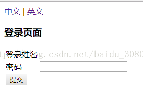
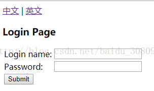

# 定义 properties 文件
① message.properties
loginname = Login name:
password = Password:
submit = Submit
welcome = Welcome {0} access demo
title = Login Page
username = administrator
② message_en_US.properties
loginname = Login name:
password = Password:
submit = Submit
welcome = Welcome {0} access demo
title = Login Page
#username = administrator
③ message_zh_CN.properties
loginname=\u767b\u5f55\u59d3\u540d
password=\u5bc6\u7801
submit=\u63d0\u4ea4
welcome=\u6b22\u8fce{0}\u8bbf\u95eeDemo
title=\u767b\u5f55\u9875\u9762
#username=\u7528\u6237\u540d
# 定义 spring mvc 配置文件
<?xml version="1.0" encoding="UTF-8"?> | |
<beans xmlns="http://www.springframework.org/schema/beans" | |
xmlns:mvc="http://www.springframework.org/schema/mvc" xmlns:context="http://www.springframework.org/schema/context" | |
xmlns:tx="http://www.springframework.org/schema/tx" xmlns:aop="http://www.springframework.org/schema/aop" | |
xmlns:p="http://www.springframework.org/schema/p" xmlns:xsi="http://www.w3.org/2001/XMLSchema-instance" | |
xmlns:cache="http://www.springframework.org/schema/cache" | |
xsi:schemaLocation=" | |
http://www.springframework.org/schema/beans | |
http://www.springframework.org/schema/beans/spring-beans.xsd | |
http://www.springframework.org/schema/mvc | |
http://www.springframework.org/schema/mvc/spring-mvc.xsd | |
http://www.springframework.org/schema/context | |
http://www.springframework.org/schema/context/spring-context.xsd | |
http://www.springframework.org/schema/tx | |
http://www.springframework.org/schema/tx/spring-tx.xsd | |
http://www.springframework.org/schema/aop | |
http://www.springframework.org/schema/aop/spring-aop.xsd | |
http://www.springframework.org/schema/cache http://www.springframework.org/schema/cache/spring-cache.xsd"> | |
<!-- 自动扫描 controller 包下的所有类，使其认为 spring mvc 的控制器 --> | |
<context:component-scan base-package="com.demo"> | |
<context:include-filter type="annotation" | |
expression="org.springframework.stereotype.Controller" /> | |
</context:component-scan> | |
<!-- 相当于注册了 DefaultAnnotationHandlerMapping 和 AnnotationMethodHandlerAdapter 两个 bean，配置一些 messageconverter。即解决了 @Controller 注解的使用前提配置。 --> | |
<mvc:annotation-driven /> | |
<!-- 加载国际化配置 --> | |
<bean id="messageSource" class="org.springframework.context.support.ResourceBundleMessageSource"> | |
<!-- 国际化信息所在的文件名 --> | |
<property name="basename" value="bundle.message"/> | |
<!-- 如果在国际化资源文件中找不到对应代码的信息，就用这个代码作为名称 --> | |
<property name="useCodeAsDefaultMessage" value="true" /> | |
</bean> | |
<mvc:interceptors> | |
<!-- 国际化拦截器如果采用基于（session/cookie）则必须配置 --> | |
<bean class="org.springframework.web.servlet.i18n.LocaleChangeInterceptor"/> | |
</mvc:interceptors> | |
<!--AcceptHeaderLocaleResolver 配置，因为 AcceptHeaderLocaleResolver 是默认语言区域，不配置也可以 --> | |
<!--<bean id="localeResolver" class="org.springframework.web.servlet.i18n.AcceptHeaderLocaleResolver"/>--> | |
<!--SessionLocaleResolver--> | |
<bean id="localeResolver" class="org.springframework.web.servlet.i18n.SessionLocaleResolver"/> | |
<!-- 对模型视图名称的解析，即在模型视图名称添加前后缀 --> | |
<bean class="org.springframework.web.servlet.view.InternalResourceViewResolver" p:prefix="/WEB-INF/views/" p:suffix=".jsp" /> | |
</beans> |
# 定义 jsp
<%@page language="java" contentType="text/html; charset=UTF-8" pageEncoding="UTF-8" %>
<%@taglib prefix="form" uri="http://www.springframework.org/tags/form" %>
<%@taglib prefix="spring" uri="http://www.springframework.org/tags" %>
<jsp:useBean id="user" class="com.demo.domain.User" scope="request"/>
<html>
<head>
<meta http-equiv="content-type" content="text/html;charset=UTF-8">
<title>测试基于HttpSession的国际化</title>
</head>
<body>
<!--用户可以选择切换语言环境-->
<a href="home?request_locale=zh_CN">中文</a> | <a href="home?request_locale=en_US">英文</a>
<br/>
<h3><spring:message code="title"/></h3>
<form:form modelAttribute="user" method="post" action="login">
<table>
<tr>
<td><spring:message code="loginname"/></td>
<td><form:input path="loginname"/></td>
</tr>
<tr>
<td><spring:message code="password"/></td>
<td><form:input path="password"/></td>
</tr>
<tr>
<td><input type="submit" value="<spring:message code="submit"/>"></td>
</tr>
</table>
</form:form>
</body>
</html>
# 添加 controller
git@github.com:SincerelyUnique/spring-mvc-Internationalization-httpsession.git
# 结果

